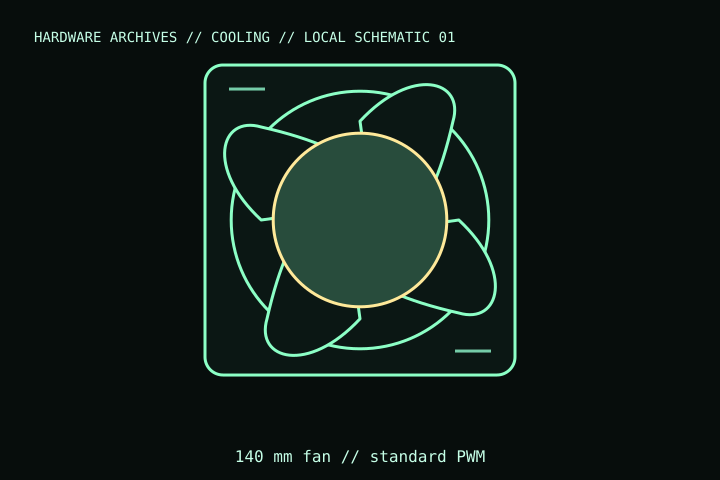

[ INDIVIDUAL COMPONENT // COOLING ]
Noctua NF-A14x25 G2 PWM
140 mm, 25 mm-thick PWM case/radiator fan in Noctua’s second-generation A-series. This record covers the standard NF-A14x25 G2 PWM model, not the speed-offset Sx2-PP set or low-speed variant.

IDENTIFICATION: Match the complete model name, suffix, article number, bundle, revision, and host manual to the physical label before installation. Similar product names and variants may use different wiring or dimensions.
Specifications
| Catalog subcategory | Case and radiator fans |
|---|---|
| Exact model | NF-A14x25 G2 PWM (standard single-fan model) |
| Frame and thickness | 140 × 140 × 25 mm |
| Speed / control | Up to 1,500 rpm; 4-pin PWM; 12 V DC |
| Electrical rating | Maximum input power 1.56 W; maximum current 0.13 A |
| Mount / host fit | 140 mm fan mounts; radiator, case, screw length, grille, filter, and adjacent component clearance are host-specific. |
Compatibility, installation & service
- Use only a chassis or radiator with a 140 mm mounting pattern and enough depth for a 25 mm frame; verify screw length and blade clearance.
- Connect to a 4-pin fan header or a PWM controller and keep combined fan current within the header/controller limit.
- Match the standard 1,500 rpm model to its label; G2 low-speed and Sx2-PP variants have different speed behavior.
Service notes
Clean the frame and blades with power disconnected; hold the rotor still while dusting. Inspect the cable and bearing for damage or abnormal noise; do not open the sealed bearing.
Manufacturer references
- Noctua — NF-A14x25 G2 PWMManufacturer specifications and exact G2 model variants.
- Noctua — Compatibility centreManufacturer support and compatibility reference.
Verify fit, wiring, and ratings against the manufacturer document for the exact unit and host. This catalog record is an identification aid, not a compatibility guarantee.